CS184/284A Spring 2026 Homework 3 Write-Up
Link to webpage: https://cal-cs184-student.github.io/hw-webpages-umgop/
Link to GitHub repository: https://github.com/cal-cs184-student/hw-webpages-umgop
Overview
In this project, I have developed a physically based renderer from scratch, enhancing a basic ray-primitive intersection engine to a high-performance path tracing engine. This was achieved through a series of steps: starting with an image space to world space ray generation, followed by a Bounding Volume Hierarchy with a centroid-based splitting strategy to achieve O(log n) complexity in complex scenes. However, this is not enough in a physically accurate renderer; hence, I have also included direct illumination using hemisphere and importance sampling, followed by global illumination using recursive path tracing and Russian Roulette termination to achieve realistic light bounces and color bleeding effects. To enhance this engine's performance, I have also included an adaptive sampling approach, where statistics are used to determine sample distribution. The biggest learning experience while developing this engine as a whole was that photorealism is ultimately a form of massive Monte Carlo integration, where beauty is really a matter of statistics. The biggest thrill in this learning experience was to see how noise in initial renderings gives way to realistic gradient effects.
Part 1: Ray Generation and Scene Intersection
The rendering pipeline is essentially a series of coordinate transformations that we perform. We start out going from image space to camera space, starting out with a pixel (x,y). Then we're normalizing that, so it goes from 0 to 1, and then we're projecting it onto a virtual sensor plane located at Z = -1 in camera space. This is done by scaling it by the dimensions of our sensor, which is determined by our horizontal and vertical fields of view:
Xcam = (2x - 1) * tan(hFov/2)
Ycam = (2y - 1) * tan(vFov/2)
After we get the vector for the camera space we want to convert it to world space. In camera space, the camera is at (0, 0, 0) looking toward -Z. To move this into an actual scene we multiply the camera vector (xcam, ycam, -1) by the Camera to World (c2w) matrix. The ray's origin in world space is simply the camera's position. Once we have a ray in world space, we now check the ray against every triangle or sphere. If the ray hits anything within its valid range [min_t, max_t] we record the intersection, update the ray's t to the hit distance (so we don't look at things further away), and eventually calculate the color based on the surface properties.
For triangle intersection we use the Moller-Trumbore algorithm which simultaneously computes the ray-plane intersection and the barycentric coordinates. We first compute two edge vectors from the triangle vertices, then use cross products and dot products to solve for the parameter t along the ray and the barycentric coordinates (b1, b2). If t falls within the ray's valid range and the barycentric coordinates are all non-negative (with b1 + b2 ≤ 1), we have a valid intersection. The surface normal at the hit point is interpolated from the vertex normals using the barycentric coordinates.


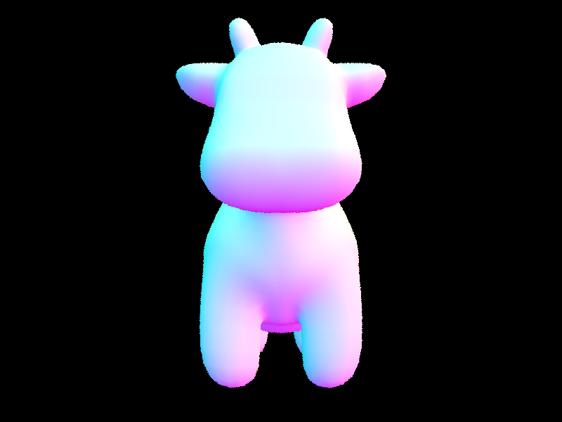
Part 2: Bounding Volume Hierarchy
Our BVH building algorithm arranges scene primitives in a binary tree structure using a recursive top-down approach. Every time the function is called recursively, we first identify a full bounding box that contains every scene primitive within a specified range of the recursion tree. The recursion tree is stopped by creating a leaf node that directly references the primitives when the number of primitives is determined to be less than or equal to the max_leaf_size value. If not, we split the current bounding box along its longest axis to preserve "square" volume shapes and minimize child volume overlap within the tree structure. We have chosen to use the average of the centroids of all primitives along a given axis for the split heuristic value. We then use the std::partition function to efficiently reorder the primitives in memory according to the split value before recursively building the BVH tree for both child nodes. The BVH building algorithm fundamentally alters the traditional rendering approach by eliminating a linear O(n) search for intersecting rays and instead utilizing a much more efficient logarithmic O(log n) search approach.
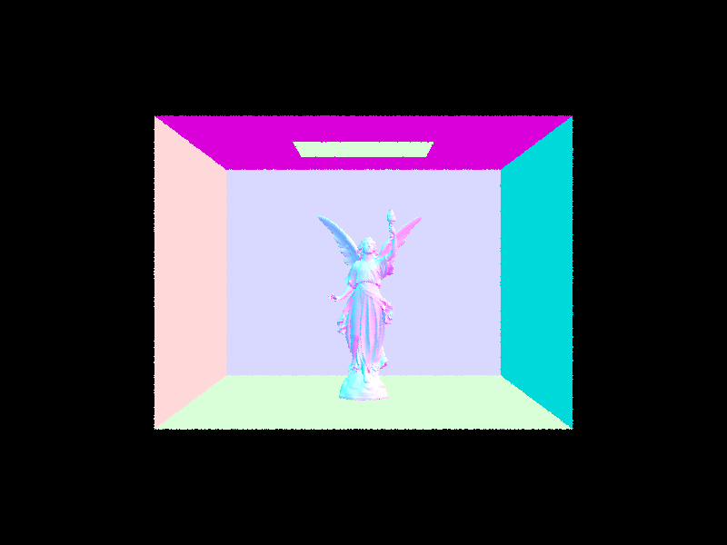
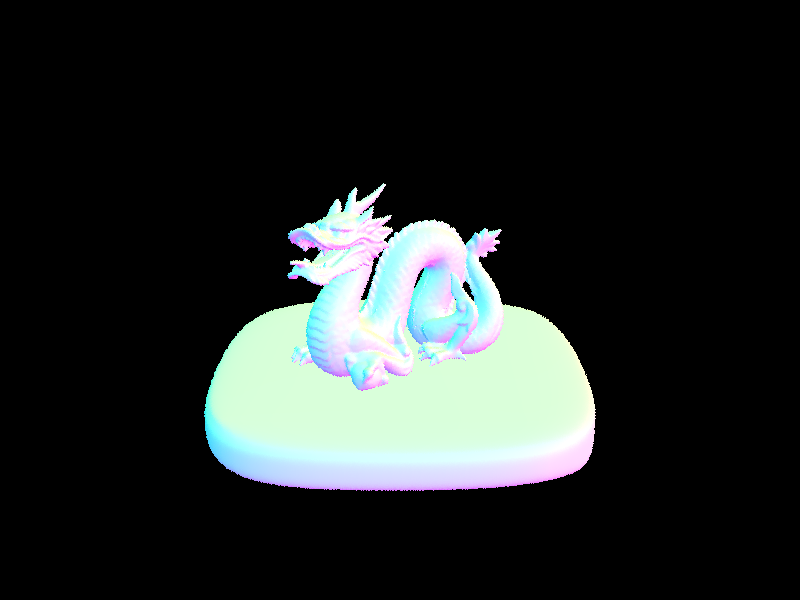
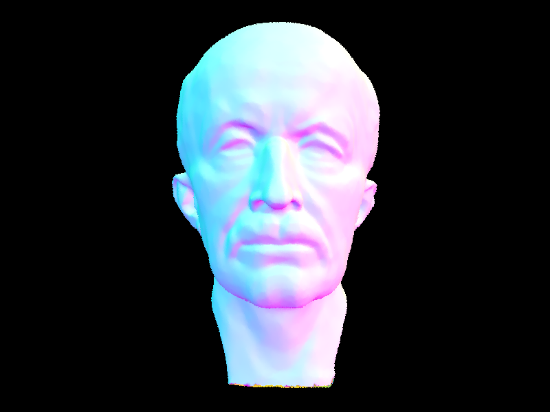
The difference between brute-force and BVH-accelerated rendering is dramatic. Without BVH, every ray must test against every primitive in the scene, resulting in rendering times that scale linearly with scene complexity. With BVH, rays traverse a logarithmic tree structure and skip vast regions of the scene, reducing intersection tests per ray from thousands down to single digits. The table below compares both approaches across scenes of increasing complexity:
| Scene | Primitives | Without BVH | With BVH | Avg Tests/Ray (BVH) |
|---|---|---|---|---|
| cow.dae | 5,856 | ~5.0 s | 0.0907 s | 3.42 |
| beetle.dae | 7,558 | ~7.0 s | 0.0506 s | 1.75 |
| CBlucy.dae | 133,784 | Infeasible | 0.0771 s | 3.32 |
For the cow mesh with 5,856 triangles, rendering dropped from roughly 5 seconds without BVH to 0.09 seconds with it — a ~55x speedup. The beetle at 7,558 primitives saw a similar improvement, going from ~7 seconds to 0.05 seconds with only 1.75 intersection tests per ray on average. The most striking case is CBlucy with 133,784 triangles: without BVH, rendering this scene is simply infeasible in any reasonable timeframe, yet with BVH it completes in just 0.08 seconds with 3.32 tests per ray. The BVH reduces the per-ray work from O(n) to O(log n), making complex scenes practical to render.
Part 3: Direct Illumination
In the uniform hemisphere sampling implementation, we estimate direct lighting by generating random rays across the hemisphere above a hit point and checking if they intersect an emissive surface. For each sample, we evaluate the reflection equation by multiplying the light's emission by the surface BSDF and a cosine term, then normalizing the result by the constant probability density function of $1/2\pi$ and the total number of samples. Conversely, the importance light sampling implementation iterates through each light source in the scene and samples directions pointing directly toward them. This method utilizes shadow rays with a restricted maximum distance to detect occluding geometry; if the path to the light is clear, we calculate the radiance using the light-specific PDF and BSDF.
After zero-bounce illumination:
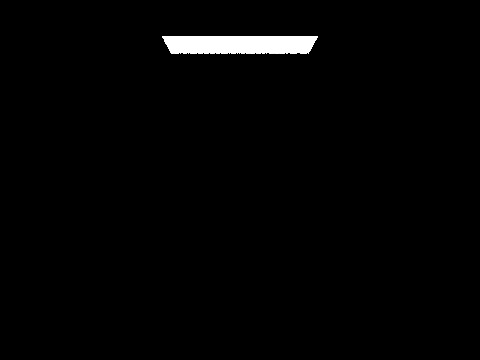
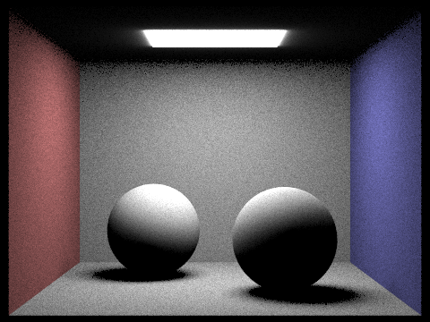
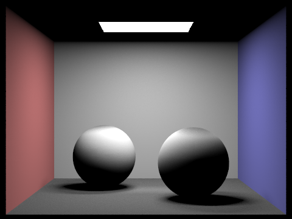
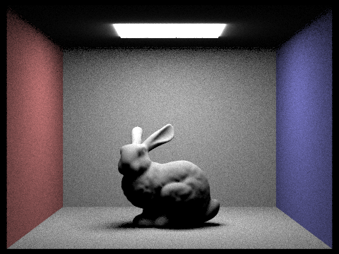
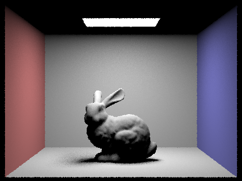
When analyzing noise levels in soft shadows using importance sampling with one sample per pixel, the visual quality improves significantly as the number of light rays increases from 1 to 64. At $l=1$, the shadows appear as a grainy, dithered collection of black and white dots because each pixel has only a single chance to "see" the light source. As the light samples increase to 4 and 16, the edges of the shadows begin to resolve into a recognizable penumbra, though visible noise persists. At $l=64$, the shadows become much smoother and reach a high-fidelity gradient that accurately represents the area light's coverage.
Comparing the two methods reveals that importance light sampling is far more efficient than uniform hemisphere sampling because it avoids wasting rays on dark directions that contribute no light to the scene. Uniform hemisphere sampling results in high-variance "salt-and-pepper" noise because random rays frequently miss small or distant light sources, whereas importance sampling targets emitters directly to ensure every non-occluded ray provides useful radiance data. Consequently, importance sampling produces much cleaner images at lower sample counts and is the only method capable of rendering point lights, which have zero probability of being hit by a random hemisphere ray.
Part 4: Global Illumination
To perform recursive global illumination, we have added direct lighting and incorporated the at_least_one_bounce_radiance function to perform recursive sampling of BSDFs and tracing of rays. The implementation details include: (1) initializing the rays at the camera with depth = max_ray_depth and decrementing it in each bounce, (2) accumulating one-bounce radiance if isAccumBounces is true, and (3) using Russian Roulette termination with a continuation probability of 0.7 after the first bounce to obtain unbiased results. The results show that indirect lighting captures important phenomena such as color bleeding and soft shadows not captured in direct-only rendered images. The progression of m=0 to m=5 shows how the image is progressively refined in each recursive bounce, with the second and third bounces having the most impact on the visual quality of the image. The comparison of the rendered image with and without accumulation shows how lower-order bounces contribute to the final image, and how Russian Roulette termination at high max depths produces almost identical results to depth-limited termination at a fraction of the cost.
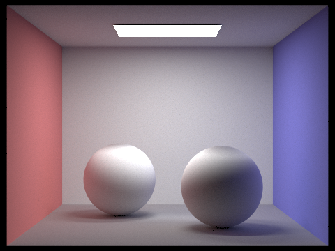

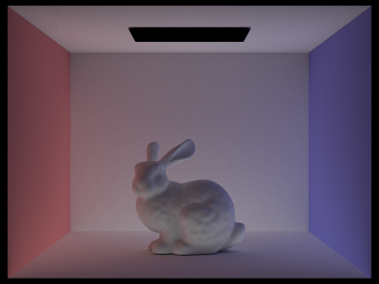
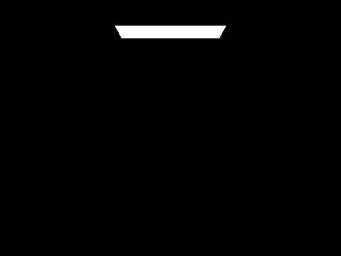
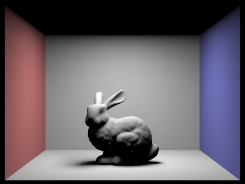
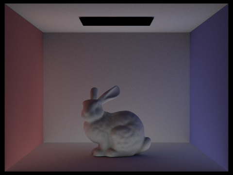
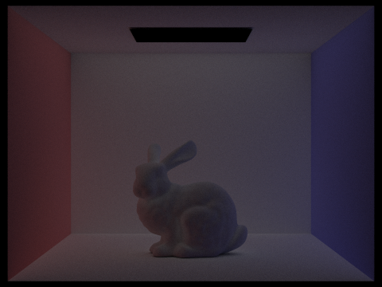
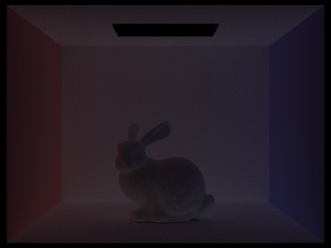
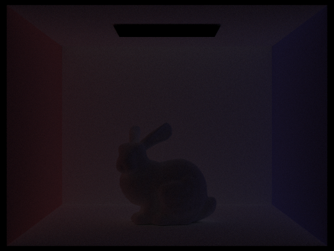
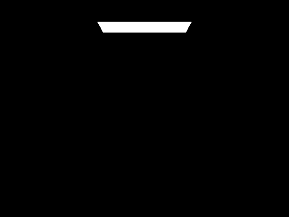
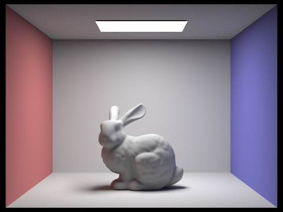
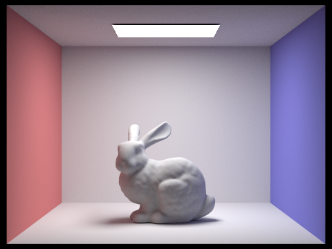
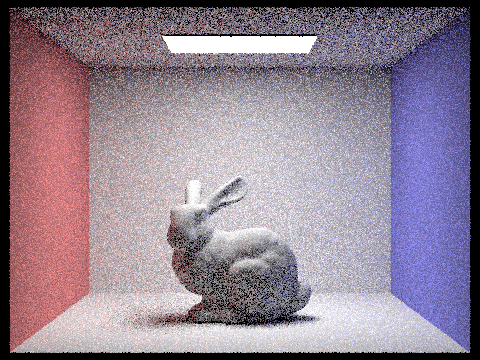
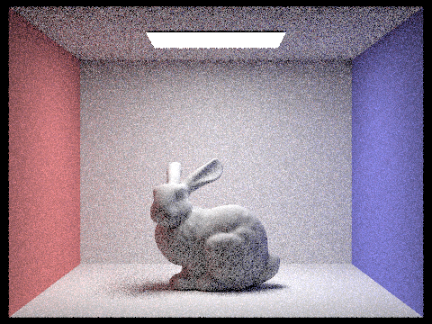
Part 5: Adaptive Sampling
Adaptive sampling avoids using a fixed high number of samples for every pixel by detecting convergence per-pixel using statistics. As we trace samples through a pixel, we track running sums $s_1 = \sum x_k$ and $s_2 = \sum x_k^2$ of sample illuminances. Every samplesPerBatch (64) samples, we compute the mean $\mu = s_1 / n$, variance $\sigma^2 = \frac{1}{n-1}(s_2 - s_1^2 / n)$, and the convergence metric $I = 1.96 \cdot \sigma / \sqrt{n}$. If $I \leq \text{maxTolerance} \cdot \mu$, the pixel has converged with 95% confidence and we stop sampling early. This concentrates computation on difficult pixels (edges, shadows, indirect lighting) while saving work on simple regions (flat walls, ceilings). In our implementation, we modified raytrace_pixel to accumulate s1 and s2 inside the existing sample loop, check convergence every samplesPerBatch iterations, break early if converged, and store the actual sample count n into sampleCountBuffer for the rate image.
Rendered scenes (2048 max samples per pixel, 1 light ray, max ray depth 5, adaptive batch 64, tolerance 0.05):
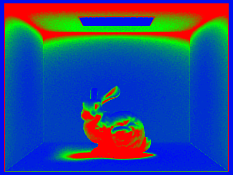
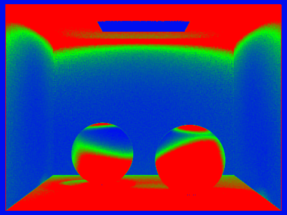
In the rate images, blue indicates low sampling rates (pixels that converged quickly, such as flat walls and ceilings) and red indicates high sampling rates (pixels that required more samples, such as edges, shadow boundaries, and areas with complex indirect lighting).
Part 6: Extra Credit — Iterative BVH Traversal
Approach
Each version now uses a while loop with a manual stack instead of recursion for BVH hits. Hitting every node once meant another function call before. That call added memory pressure from stored values like return points and locals. Deeper trees magnify this cost quickly. Scenes with many shapes make it worse fast.
Specifics of Implementation
A single file holds everything, no external dependencies needed. Code compiles cleanly at maximum warning levels across compilers, without relying on special flags or nonstandard extensions. Strict conformance ensures portability and long-term maintainability.
Working through the tree step by step makes sense once you see the pattern. Start by placing the top node into the stack. Then keep going - pull a node out, check if its box meets the ray. Depending on that result, put both offspring onto the stack or examine items at the bottom level. If an intersection shows up during checks, stop everything and send back true without delay. While gathering hits in full traversal mode, collect only the nearest contact across every endpoint reached. Pushing the left branch later ensures it gets pulled earlier, changing processing order just enough.
| Scene | Primitives | Recursive (M rays/sec) | Iterative (M rays/sec) | Speedup |
|---|---|---|---|---|
| CBbunny.dae | 33,522 | 2.92 | 3.18 | +8.9% |
| CBdragon.dae | 100,012 | 3.11 | 3.83 | +23.2% |
With CBdragon's complex setup - 100K primitives and a deep BVH - the performance gain stands out clearly because recursive methods drag down processing more when nesting runs deeper. In contrast, the basic layout of CBbunny shows smaller improvements due to its shallow tree structure where recursion adds little burden compared to overall workload. Tweaks applied include
Fewer memory trips happen since the array lives right where the thread runs. Instead of scattering pieces like std::deque, it sits whole and ready. Efficiency slips in by staying put.
Skipping recursion means fewer function calls. Without it, there is no need to manage stack frames. That saves space and time during execution. Handling returns becomes simpler too. Register backups are avoided as a result. Less work happens behind the scenes.
That tiny array holding 64 pointers fits neatly into cache, so it gets used over and over right where it sits. Unlike those deep piles of recursive function calls piling up elsewhere.
Identical pictures come out because the step-by-step method hits each node in the BVH one after another, doing matching checks every time. Same path, same math, same result - nothing shifts along the way.